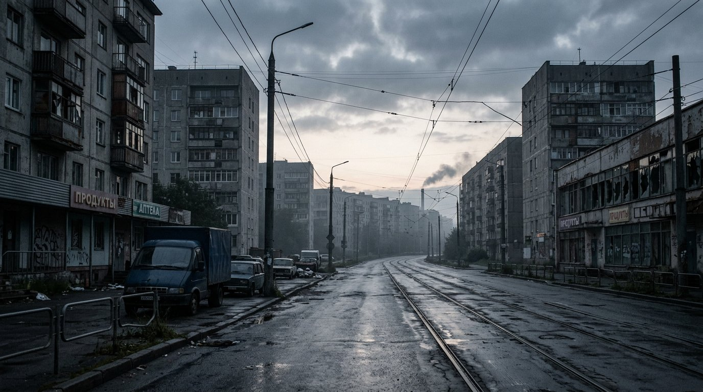

B–08 / PROFIL DE BOSS Boss individuel · variantes de lieu
Kollontay : repères et niveau de preuve
La page communautaire décrit des variantes à l’Académie du ministère de l’Intérieur et au Klimov Shopping Mall. Les secteurs et l’état de la carte doivent être vérifiés dans le raid.
Fiche communautaire · points à vérifier en raid
- Groupe
- Boss individuel · variantes de lieu
- Faction
- Scavs · wiki communautaire
- Gardes rapportés
- Quatre gardes indiqués par la wiki; non vérifiés dans le client.
- Équipement rapporté
- Le PR-Taran police baton est l’objet notable associé par la wiki. Les effets de combat ne sont pas transformés ici en règle garantie.
- Rôle décrit
- Deux secteurs et des groupes de garde sont mentionnés; ne confondez pas le nom de la carte avec un spawn fixe.
Notes par mode
Ne pas transposer les taux
Les lieux sont rapportés par la wiki; aucune probabilité officielle ou condition de raid n’est donnée ici.
Notes communautaires / officielles séparées par mode :
PvP permanent
Les lieux sont rapportés par la wiki; aucune probabilité officielle ou condition de raid n’est donnée ici.
PvE Zone
La présence PvE et la variante de lieu restent à vérifier; la carte communautaire ne prouve pas un spawn.
PvP Seasonal
Aucun taux Seasonal n’est repris; vérifiez la carte sélectionnée et les annonces d’événement.
Lieux rapportés
Repères de sources communautaires, pas des points de spawn garantis.
Académie du ministère de l’Intérieur ou Klimov Shopping Mall dans la wiki; ce ne sont pas des positions confirmées pour chaque raid.
PRUDENCE Pas une route garantie
Repères avant l’engagement
Conseils généraux de couverture et de vérification, pas un script d’IA testé.
- Avant l’entrée, identifiez la variante de secteur et les couloirs de repli; préparez-vous à des angles proches comme à des traversées ouvertes.
- La wiki associe un baton au profil mais ne constitue pas un test de proc ou de panne d’arme actuel.
- Si le secteur ne correspond pas à votre raid, réévaluez l’objectif plutôt que de chercher un marqueur ancien.
Progression / quête
Vérifier les tâches associées
Les tâches éventuelles sont à contrôler dans le client. Ouvrir la section des tâches de la source communautaire

WIKI / VALEUR RAPPORTÉE Pas un relevé client
Santé communautaire rapportée
Total HP transcrit d’une table de la wiki communautaire consultée le 18 novembre 2026; peut dépendre du patch et n’a pas été vérifié dans le client.
Total indiqué dans la source communautaire
1055 HPCette valeur n’est pas présentée comme un total actuel certifié par BSG.
B–08 Références
Sources et limites
Données Tarkov.dev, pages communautaires et annonces BSG séparées. Relevé le 18 novembre 2026; aucun test de protection en client ni aucun raid en direct n’a été réalisé pour cette phase.
- Wiki communautaireEFT Wiki — Kollontay (nouvel onglet)
Profil communautaire consulté le 18/11/2026. Secteurs, gardes et santé restent des repères wiki non vérifiés en jeu.
- Wiki communautaireEFT Wiki — Bosses (nouvel onglet)
Page communautaire relue le 18/11/2026 pour les lieux associés aux boss et sa table d’événements. Ne prouve ni disponibilité dans un mode/raid ni taux de présence ; les mentions d’événement sont séparées. Ne pas compter les entrées Tarkov.dev comme des boss uniques.
À lire ensuite
Index des boss
Revenir à la comparaison par lieu et par mode.